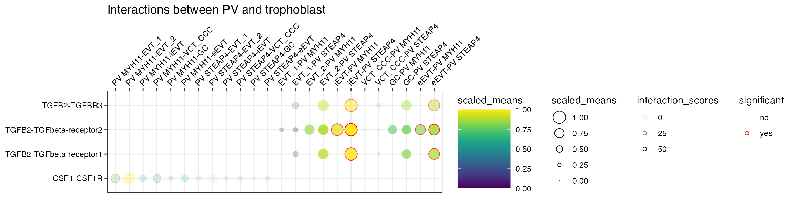
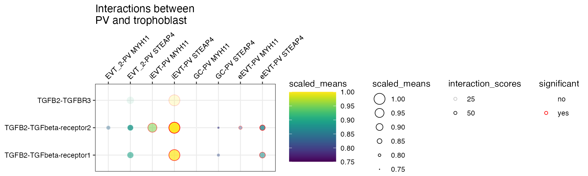
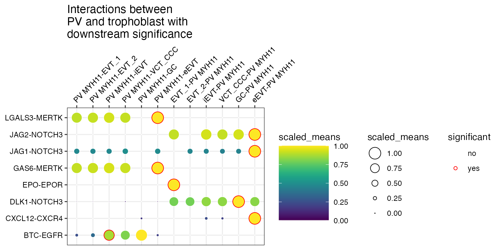
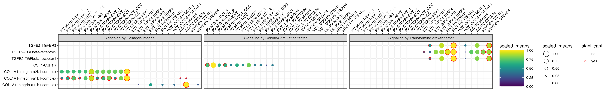
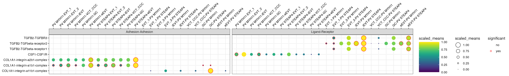

New CellPhoneDB v5 results
2023-08-14
vignette_v5.rmd


CellPhoneDB v5 results
From version 5 of CellPhoneDB,
there is a new output file - interaction_scores.
According to the official repository, this table corresponds to:
interaction_scores: stores the new score generated. This
score ranges from 0-100.
To score interactions CellPhoneDB v5 employs the following protocol:
- Exclude genes not participating in any interaction and those expressed in less than k% of cells within a given cell type.
- Calculate the mean expression (G) of each gene (i) within each cell type (j).
- For heteromeric proteins, aggregate the mean gene expression of each subunit (n) employing the geometric mean.
- Scale mean gene/heteromer expression across cell types between 0 and 100.
- Calculate the product of the scale mean expression of the interaction proteins as a proxy of the interaction relevance.
cellsign: accepts the new CellSign data. #
TODO: ask Kevin for result description
ktplots will support these output via inclusion into the
existing plot_cpdb function. We will gradually enable their
functionality across the other functions, as well as with in the python
package eventually.
Load packages
library(ktplots)
data(cpdb_output_v5)
plot_cpdb_heatmap(pvals=relevant_interactions_v5, degs_analysis=TRUE, title="Sum of significant interactions")
plot_cpdb(
scdata=sce_v5,
cell_type1="PV MYH11|PV STEAP4|PV MMPP11",
cell_type2="EVT_1|EVT_2|GC|iEVT|eEVT|VCT_CCC",
means=means_v5,
pvals=relevant_interactions_v5,
celltype_key="cell_labels",
genes=c("TGFB2", "CSF1R"),
title="Interactions between PV and trophoblast ",
max_size=6,
highlight_size=0.75,
degs_analysis=TRUE,
standard_scale=TRUE
)Interaction scores
Let’s start with interaction scores. If a dataframe corresponding to
the interaction_scores file is provided, you can toggle the
alpha transparency of the interactions by the interaction score
(interaction ranking is simply the score/100).
plot_cpdb(
scdata=sce_v5,
cell_type1="PV MYH11|PV STEAP4|PV MMPP11",
cell_type2="EVT_1|EVT_2|GC|iEVT|eEVT|VCT_CCC",
means=means_v5,
pvals=relevant_interactions_v5,
celltype_key="cell_labels",
genes=c("TGFB2", "CSF1R"),
title="Interactions between PV and trophoblast ",
max_size=6,
highlight_size=0.75,
degs_analysis=TRUE,
standard_scale=TRUE,
interaction_scores=interaction_scores_v5,
scale_alpha_by_interaction_scores=TRUE
)
You can also specify a minimum interaction score to keep, removing all interactions lesser than this value.
plot_cpdb(
scdata=sce_v5,
cell_type1="PV MYH11|PV STEAP4|PV MMPP11",
cell_type2="EVT_1|EVT_2|GC|iEVT|eEVT|VCT_CCC",
means=means_v5,
pvals=relevant_interactions_v5,
celltype_key="cell_labels",
genes=c("TGFB2", "CSF1R"),
title="Interactions between\nPV and trophoblast ",
max_size=6,
highlight_size=0.75,
degs_analysis=TRUE,
standard_scale=TRUE,
interaction_scores=interaction_scores_v5,
min_interaction_score=20
)
or specify both to have the alpha transparency shown too.
plot_cpdb(
scdata=sce_v5,
cell_type1="PV MYH11|PV STEAP4|PV MMPP11",
cell_type2="EVT_1|EVT_2|GC|iEVT|eEVT|VCT_CCC",
means=means_v5,
pvals=relevant_interactions_v5,
celltype_key="cell_labels",
genes=c("TGFB2", "CSF1R"),
title="Interactions between\nPV and trophoblast ",
max_size=6,
highlight_size=0.75,
degs_analysis=TRUE,
standard_scale=TRUE,
interaction_scores=interaction_scores_v5,
scale_alpha_by_interaction_scores=TRUE,
min_interaction_score=20
)
CellSign
If a dataframe corresponding to the cellsign file is
provided, you can toggle the filter the interactions by the results
plot_cpdb(
scdata=sce_v5,
cell_type1="PV MYH11",
cell_type2="EVT_1|EVT_2|GC|iEVT|eEVT|VCT_CCC",
means=means_v5,
pvals=relevant_interactions_v5,
celltype_key="cell_labels",
title="Interactions between\nPV and trophoblast with\ndownstream significance",
max_size=6,
highlight_size=0.75,
degs_analysis=TRUE,
standard_scale=TRUE,
cellsign=cellsign_v5,
filter_by_cellsign=TRUE
)
and also scale the alpha value (50% for 0 and 100% for 1).
plot_cpdb(
scdata=sce_v5,
cell_type1="PV MYH11",
cell_type2="EVT_1|EVT_2|GC|iEVT|eEVT|VCT_CCC",
means=means_v5,
pvals=relevant_interactions_v5,
celltype_key="cell_labels",
title="Interactions between\nPV and trophoblast with\ndownstream significance",
max_size=6,
highlight_size=0.75,
degs_analysis=TRUE,
standard_scale=TRUE,
cellsign=cellsign_v5,
filter_by_cellsign=TRUE,
scale_alpha_by_cellsign=TRUE
)
Additional plotting data
From now on, is_integrin, directionality
and classification are transferred to final output table in
plot_cpdb. This means you will be able to use something
like facet_grid/`facet_wrap`` to plot them!
library(ggplot2)
p <- plot_cpdb(
scdata = sce_v5,
cell_type1 = "PV MYH11|PV STEAP4|PV MMPP11",
cell_type2 = "EVT_1|EVT_2|GC|iEVT|eEVT|VCT_CCC",
means = means_v5,
pvals = relevant_interactions_v5,
celltype_key = "cell_labels",
genes = c("TGFB2", "CSF1R", "COL1A1"),
max_size = 6,
highlight_size = 0.75,
degs_analysis = TRUE,
standard_scale = TRUE,
interaction_scores = interaction_scores_v5
# return_table = TRUE
)
p + facet_wrap(~classification, ncol = 3)
p + facet_wrap(~classification + is_integrin, ncol = 3)
p + facet_wrap(~directionality, ncol = 2)